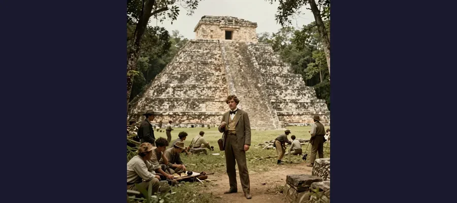
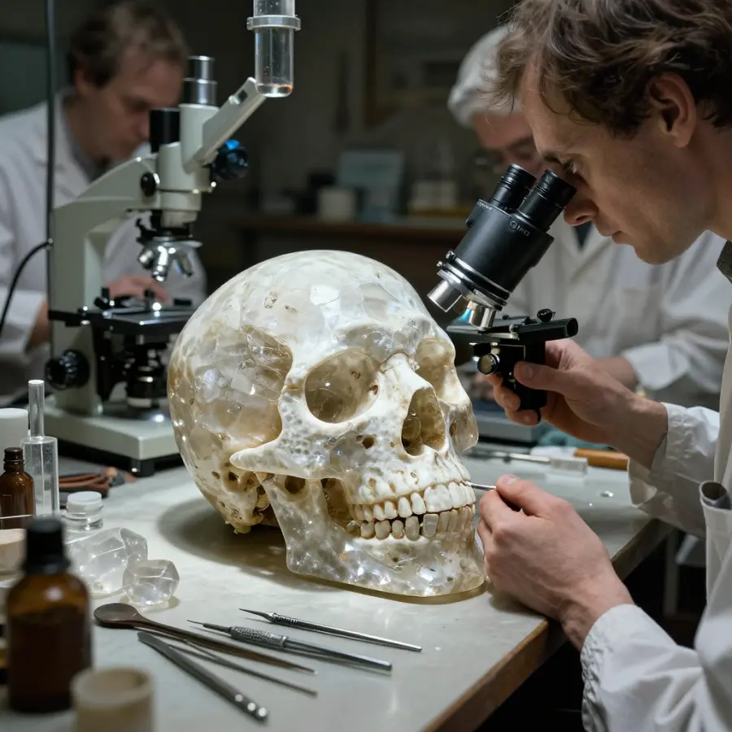

The Crystal Skulls

A mysterious crystal skull - beautiful art, but not ancient magic!
For over a century, mysterious crystal skulls have captured the imagination of explorers, scientists, and mystery lovers around the world. These beautiful quartz carvings were said to be ancient Mayan or Aztec artifacts with magical powers. But the truth behind them turned out to be even more fascinating than the legends!
But here's the mystery: if these skulls were ancient, how did their creators carve such perfect shapes from incredibly hard quartz without modern tools? And why did so many people believe they had supernatural powers?
Overview
What Are Crystal Skulls?
Crystal skulls are life-sized human skull carvings made from clear or milky quartz crystal. Some are small, while others are as big as a real human head. The most famous ones look incredibly detailed, with smooth surfaces that seem to glow when light passes through them.
For decades, people believed these skulls were created by ancient civilizations thousands of years ago. Some claimed they had mystical powers - that they could cause visions, heal sickness, or even predict the future!
💎 The Skull of Doom
The most famous crystal skull was said to have the power to cause death if anyone looked into its eyes. (Spoiler: It doesn't!)
The Mitchell-Hedges Discovery
In the 1920s, a British explorer named Frederick Mitchell-Hedges claimed his daughter Anna had discovered a beautiful crystal skull at the Maya ruins of Lubaantun in Belize. This skull was incredibly detailed - so perfect that it seemed impossible for ancient people to have created it.

The Maya ruins of Lubaantun in Belize, where Mitchell-Hedges claimed the skull was found.
Mitchell-Hedges wrote exciting adventure books about finding the skull. He said it was over 3,600 years old and had been used by ancient Maya priests in mysterious rituals. The story captivated people around the world!
🏛️ Museums Around the World
There are several famous crystal skulls in museums, including the British Museum in London and the Smithsonian in Washington D.C.!
Evidence
The Scientific Investigation
For many years, scientists wondered about these mysterious artifacts. Were they really thousands of years old? How could ancient people without modern tools carve such perfect shapes from incredibly hard quartz crystal?
In the 1990s and 2000s, researchers finally got permission to study the famous skulls using modern scientific equipment. What they discovered was shocking!

Modern scientific analysis revealed the true age of the crystal skulls.
Using powerful microscopes, scientists found tiny tool marks on the skulls. These marks showed that the skulls had been carved using rotating tools - technology that didn't exist in ancient times!
🔬 Under the Microscope
Scientists found traces of modern carborundum, a synthetic abrasive used for cutting stone in the 19th century!
Competing Explanations
The Surprising Truth
The evidence was clear: the crystal skulls were not ancient at all. They were actually made in the mid-to-late 1800s in Europe - most likely in Germany, in a town called Idar-Oberstein that was famous for carving quartz.
How did they end up in museums? In the 19th century, there was huge excitement about ancient civilizations. Collectors would pay lots of money for "ancient" artifacts. Some clever craftsmen realized they could make crystal skulls and sell them as mysterious ancient treasures!
The Mitchell-Hedges skull? Records show it was actually purchased at a London auction in 1943, not discovered in Belize. The exciting discovery story was made up to make the skull seem more valuable and mysterious.
Why Does the Mystery Continue?
Even though science has proven the crystal skulls are modern creations, some people still believe they have special powers. Movies like "Indiana Jones and the Kingdom of the Crystal Skull" have kept the legend alive in popular culture.
The skulls remain beautiful works of art, even if they're not ancient. The skill required to carve such detailed shapes from quartz is still impressive!
🎬 Hollywood Mystery
The 2008 Indiana Jones movie featuring crystal skulls was partly inspired by the real mystery - even though by then, scientists already knew the truth!
Open Questions
What We've Learned
- Scientific testing can reveal the truth about mysterious artifacts
- Amazing stories aren't always true - sometimes they're created to sell things
- Question everything - even things in museums!
- Modern craftsmen were incredibly skilled - the skulls are still amazing works of art
The crystal skulls may not be ancient, but their story highlights human curiosity, scientific investigation, and how mysteries capture public imagination across generations.
References & Further Reading
- Sax et al. (2008), Journal of Archaeological Science (tool-mark analysis)
- Smithsonian object record and technical notes
- British Museum collection entry: The Crystal Skull
- Smithsonian Magazine background interview with museum researchers
- Google Scholar literature search
Editorial note: this topic is a case study in authentication methods and provenance standards, not only in mythology. See our Editorial Policy.